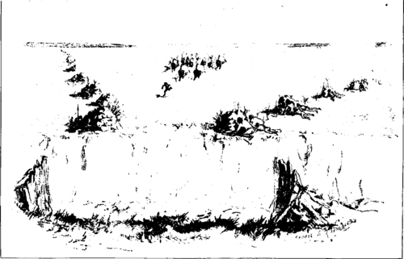

The Last Of The Buffalo. Part 5
Description
This section is from the book "Hunting", by Archibald Rogers. Also available from Amazon: Hunting.
The Last Of The Buffalo. Part 5
To the Indians the buffalo was the staff of life. It was their food, clothing, dwellings, tools. The needs of a savage people are not many, perhaps; but whatever the Indians of the plains had, that the buffalo gave them. It is not strange, then, that this animal was reverenced by most plains tribes, nor that it entered largely into their sacred ceremonies, and was in a sense worshipped by them. "Through the corn and the buffalo we worship the Father," say the Pawnees. "What one of all the animals is most sacred?" ask the Blackfeet; and the reply given is, "The buffalo."
The robe was the Indian's winter covering and his bed; while the skin, freed from the hair and dressed, constituted his summer sheet or blanket. Dressed hides were used for moccasins, leggings, shirts, and women's dresses. Dressed cow-skins formed their lodges, the warmest and most comfortable portable shelters ever devised. Braided strands of raw hide furnished them with ropes and lines, and these were made also from the twisted hair. The green hide was sometimes used as a kettle, in which to boil meat, or, stretched over a frame of boughs, gave them coracles, or boats, for crossing rivers. The tough, thick hide of the bull's neck, allowed to shrink smooth, made a shield which would turn a lance-thrust, an arrow, or even the ball from an old-fashioned smooth-bore gun. From the raw hide, the hair having been shaved off, were made parfleches, — envelope-like cases which served for trunks or boxes, useful to contain small articles. The cannon-bones and ribs were used to make implements for dressing hides, the shoulder-blades lashed to sticks made hoes and axes, and the ribs runners for small sledges drawn by dogs. The hoofs were boiled to make a glue for fastening the feathers and heads on their arrows; the hair used to stuff cushions, and later saddles; strands of the long black beard to ornament articles of wearing-apparel and implements of war, such as shields and quivers. The sinews lying along the back gave them thread and bow-strings, and backed their bows. The horns furnished spoons and ladles, and ornamented their war bonnets. Water buckets were made from the lining of the paunch. The skin of the hind leg cut off above the pastern, and again a short distance above the hock, was once used for a moccasin or boot. Fly-brushes were made from the skin of the tail dried on sticks. Knife-sheaths, quivers, bow-cases, gun-covers, saddle-cloths, and a hundred other useful and necessary articles, all were furnished by the buffalo.
The Indians killed some smaller game, as elk, deer, and antelope; but for food their dependence was on the buffalo. But before the coming of the whites their knives and arrow-heads were merely sharpened stones, weapons which would be inefficient against such great, thick-skinned beasts. Even under the most favorable circumstances, with these primitive implements, they could not kill food in quantities sufficient to supply their needs. They must have some means of taking the buffalo in considerable numbers. Such wholesale capture was accomplished by traps or surrounds, which all depended for success on one characteristic of the animal, its curiosity.
A Blackfoot Piskiun
The Blackfeet, Plains Crees, Gros Ventres of the Prairie, Sarcees, some bands of the Dakotas, Snakes, Crows, and some others, drove the herds of buffalo into pens from above, or over high cliffs, where the fall killed or crippled a large majority of the herd. The Cheyennes and Ara-pahoes drove them into pens on level ground; the Blackfeet, Aricaras, Mandans, Gros Ventres of the Village, Pawnees, Omahas, Otoes, and others, surrounded the herds in great circles on the prairie, and then frightening them so that they started running, kept them from breaking through the line of men, and made them race round and round in a circle, until they were so exhausted that they could not run away, and were easily killed.
These primitive modes of slaughter have been described by earlier writers, and frequently quoted in recent years; yet in all that has been written I fail to find a single account which gives at all a true notion of the methods employed, or the means by which the buffalo were brought into the enclosures. Eye-witnesses have been careless observers, and have taken many things for granted. My understanding of this matter is derived from men who from childhood have been familiar with these things; and from them, during years of close association, I have again and again heard the story of these old hunting methods.
The trap of the Backfeet was called the piskun. It was an enclosure, one side of which was formed by the vertical wall of a cut bank, the Others being built of rocks, logs, poles, and brush six or eight feet high. It was not necessary that these walls should be very strong; but they had to be tight, so that the buffalo could not see through them. From a point on the cut bank above this enclosure, in two diverging lines stretching far out into the prairie, piles of rock were heaped up at short intervals, or bushes were stuck in the ground, forming the wings of a V-shaped chute, which would guide any animals running down the chute to its angle above the piskun. When a herd of buffalo were feeding near at hand, the people prepared for the hunt, in which almost the whole camp took part. It is commonly stated that the buffalo were driven into the piskun by mounted men, but this is not the case. They were not driven, but led; and they were led by an appeal to their curiosity. The man who brought them was usually the possessor of a "buffalo rock," a talisman which was believed to give him greater power to call the buffalo than was had by others. The previous night was spent by this man in praying for success in the enterprise of the morrow. The help of the Sun, Napi, and all Above People was asked for, and sweet grass was burned to them. Early in the morning, without eating or drinking, the man started away from the camp, and went up on the prairie. Before he left the lodge he told his wives that they must not go out, or even look out, of the lodge during his absence. They should stay there, and pray to the Sun for his success, and burn sweet grass until he returned. When he left the camp, and went out on the prairie toward the buffalo, all the people followed him, and distributed themselves along the wings of the chute, hiding behind the piles of rocks or brush. The caller sometimes wore a robe and a bull's-head bonnet, or at times was naked. When he had approached close to the buffalo, he endeavored to attract their attention by moving about, wheeling round and round, and alternately appearing and disappearing. The feeding buffalo soon began to raise their heads and stare at him; and presently the nearest ones would walk toward him to discover what this strange creature might be, and the others would follow. As they began to approach, the man withdrew toward the entrance of the chute. If the buffalo began to trot, he increased his speed; and before very long he had the herd well within the wings. As soon as they had passed the first piles of rock, behind which some of the people were concealed, the Indians sprang into view, and by yelling and waving robes frightened the hindmost of the buffalo, which then began to run down the chute. As they passed along, more and more people showed themselves and added to their terror; and in a very short time the herd was in a headlong stampede, guided toward the angle above the piskun by the piles of rock on either side.
Continue to: